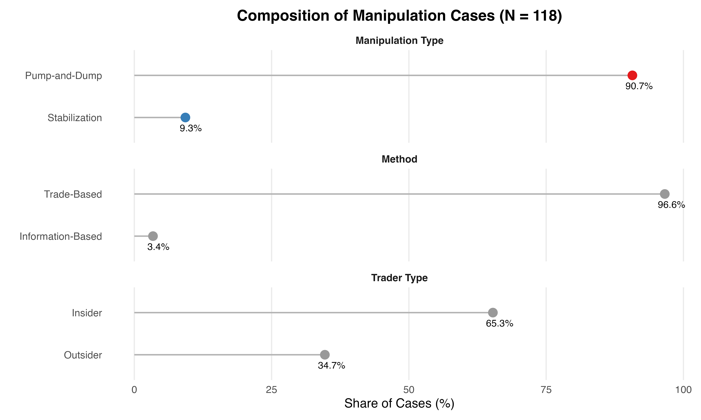
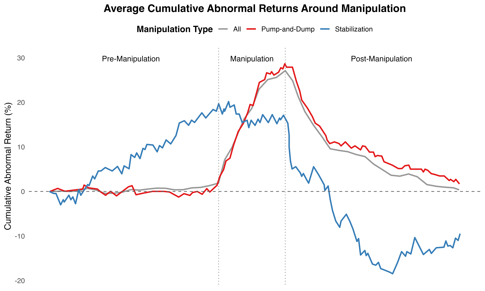

In financial markets, prices are meant to incorporate information, allowing markets to function efficiently. But sometimes, traders deliberately manipulate prices to profit at the expense of others. In their study “Stock Manipulation and Its Effects: Pump and Dump versus Stabilization”, Yu Chuan Huang and Yao Jen Cheng (2015) examine how these tactics play out in Taiwan’s stock markets. Drawing on 118 prosecuted manipulation cases between 1991 and 2010, they explore what happens to prices, volatility, and investor behaviour during and after manipulation. While previous research had already shown that manipulation was possible, Huang and Cheng push further by comparing two distinct strategies: aggressive Pump-and-Dump operations and quieter Stabilization attempts. Their study is among the first to use a large hand-collected sample to examine real-world manipulation in an emerging market, one where regulation is looser and retail investors dominate. What they find has clear implications for market oversight and investor protection.
Strategies Explained
Pump-and-Dump: involves artificially inflating a stock’s price through heavy buying, then selling once others join in, causing a temporary misvaluation.
Stabilization: refers to efforts to hold a stock’s price steady, typically to prevent declines rather than create gains.
What was studied?
To understand the real impact of stock manipulation, the authors analysed 118 prosecuted manipulation cases from the Taiwanese stock market between 1991 and 2010. These cases were all verified by courts, making them a rare and valuable data source.
Most of the cases (90.68%) were categorized as Pump-and-Dump schemes, while a smaller share involved Stabilization. The authors focused on how these different strategies affected stock prices, trading behavior, and market efficiency.
To measure these effects, they tracked stock performance before, during, and after the manipulation. They looked at changes in:
- Abnormal returns (price changes not explained by the market)
- Trading volume
- Volatility
- How quickly prices returned to normal afterward
- Pricing efficiency, measured by how much a stock’s return deviated from market-predicted behavior
By comparing manipulated stocks to similar non-manipulated ones, the study isolated the impact of manipulation itself and not just normal market fluctuations. The breakdown of manipulation types and trader characteristics is shown in Figure 1 below.

What did they find?
The study shows a clear difference in how the two strategies affect the market and how harmful Pump-and-Dump schemes really are.
Pump-and-Dump causes short-term spikes and long-term crashes
Stocks targeted in Pump-and-Dump schemes saw their prices rise by about 28% during the manipulation period. But these gains were short-lived: once the manipulators sold off their shares, prices quickly dropped back down.
Manipulated stocks also saw surging trading volumes and higher volatility, both during and after the scheme. These signs suggest that the price movements weren’t based on real news or fundamentals but rather on artificial hype. The average cumulative abnormal returns shown in Figure 2 reflect how a stock outperformed or underperformed the market over time, assuming an investor entered 100 days before the manipulation began.
Stabilization has little impact
In contrast, stocks targeted by Stabilization efforts showed minimal price changes. These cases didn’t create price bubbles or sharp reversals and had no significant impact on volatility or efficiency.

Additional Findings
The paper suggests that firms with weaker fundamentals tend to experience more severe efficiency distortions following manipulation. Stocks from companies with negative earnings or poor governance (such as CEOs also serving as board chairs) experienced greater price distortions and less efficient pricing. The authors also find that regulation plays a role: after Taiwan repealed a key anti-manipulation rule in 2000, volatility during manipulation periods increased, suggesting that weaker oversight makes markets more vulnerable.
Why does this matter?
At first glance, stock manipulation might seem like a niche problem for regulators or finance professionals. But the consequences ripple far beyond that.
For everyday investors, Pump-and-Dump schemes pose a direct risk. They often target stocks that seem to be “taking off,” tempting people to buy in just before the price collapses. Without realizing it, these investors become the exit strategy for manipulators.
At a broader level, repeated manipulation undermines trust in the market. If prices can be faked, then the idea that markets reflect real information starts to break down. That’s a serious problem, not just for investors, but for anyone whose pension, savings, or tax money depends on stable markets.
By studying actual court-prosecuted cases, this research shows that manipulation isn’t just theoretical. It has real effects on real people. For investors, staying informed is a key defence against being caught in someone else’s exit strategy.
Conclusion
Huang and Cheng’s (2015) study sheds light on the real effects of stock manipulation, especially the sharp distortions caused by Pump-and-Dump schemes. By tracking actual court-prosecuted cases, the paper offers rare insights into how prices, volatility, and investor behavior are affected when markets are being played.
At the same time, it’s important to note a limitation: the study only includes manipulation cases that were caught and prosecuted. This raises the possibility of a so-called selection bias. Milder or more sophisticated manipulations may have gone undetected, meaning the findings might reflect worst-case scenarios rather than the full picture. Still, the paper makes a strong case for closer oversight, stronger regulation, and investor awareness.
For anyone participating in the market, a trader, policymaker or passive investor, the takeaway is clear: not all price movements are created equal, and some are designed to mislead. Recognizing that is the first step toward protecting yourself.
References
Supported by TRR 266 Accounting for Transparency